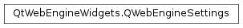

QWebEngineSettings¶
Synopsis¶
Functions¶
- def
defaultTextEncoding() - def
fontFamily(which) - def
fontSize(type) - def
resetAttribute(attr) - def
resetFontFamily(which) - def
resetFontSize(type) - def
resetUnknownUrlSchemePolicy() - def
setAttribute(attr, on) - def
setDefaultTextEncoding(encoding) - def
setFontFamily(which, family) - def
setFontSize(type, size) - def
setUnknownUrlSchemePolicy(policy) - def
testAttribute(attr) - def
unknownUrlSchemePolicy()
Static functions¶
- def
defaultSettings() - def
globalSettings()
Detailed Description¶
The
PySide2.QtWebEngineWidgets.QWebEngineSettingsclass provides an object to store the settings used byPySide2.QtWebEngineWidgets.QWebEnginePage.
PySide2.QtWebEngineWidgets.QWebEngineSettingsallows configuration of browser properties, such as font sizes and families, the location of a custom style sheet, and generic attributes, such as JavaScript support. Individual attributes are set using thePySide2.QtWebEngineWidgets.QWebEngineSettings.setAttribute()function. TheQWebEngineSettings.WebAttributeenum further describes each attribute.Each
PySide2.QtWebEngineWidgets.QWebEnginePageobject has its ownPySide2.QtWebEngineWidgets.QWebEngineSettingsobject, which configures the settings for that page. If a setting is not configured for a web engine page, it is looked up in the settings of the profile the page belongs to.
-
PySide2.QtWebEngineWidgets.QWebEngineSettings.FontFamily¶ This enum describes the generic font families defined by CSS 2. For more information see the CSS standard.
Constant Description QWebEngineSettings.StandardFont QWebEngineSettings.FixedFont QWebEngineSettings.SerifFont QWebEngineSettings.SansSerifFont QWebEngineSettings.CursiveFont QWebEngineSettings.FantasyFont QWebEngineSettings.PictographFont (added in Qt 5.7)
-
PySide2.QtWebEngineWidgets.QWebEngineSettings.WebAttribute¶ This enum type specifies settings for web pages:
Constant Description QWebEngineSettings.AutoLoadImages Automatically dowloads images for web pages. When this setting is disabled, images are loaded from the cache. Enabled by default. QWebEngineSettings.JavascriptEnabled Enables the running of JavaScript programs. Enabled by default. QWebEngineSettings.JavascriptCanOpenWindows Allows JavaScript programs to open popup windows without user interaction. Enabled by default. QWebEngineSettings.JavascriptCanAccessClipboard Allows JavaScript programs to read from and write to the clipboard. Writing to the clipboard is always allowed if it is specifically requested by the user. See to also allow pasting the content of the clipboard content from JavaScript. Disabled by default. QWebEngineSettings.LinksIncludedInFocusChain Includes hyperlinks in the keyboard focus chain. Enabled by default. QWebEngineSettings.LocalStorageEnabled Enables support for the HTML 5 local storage feature. Enabled by default. QWebEngineSettings.LocalContentCanAccessRemoteUrls Allows locally loaded documents to ignore cross-origin rules so that they can access remote resources that would normally be blocked, because all remote resources are considered cross-origin for a local file. Remote access that would not be blocked by cross-origin rules is still possible when this setting is disabled (default). Note that disabling this setting does not stop XMLHttpRequests or media elements in local files from accessing remote content. Basically, it only stops some HTML subresources, such as scripts, and therefore disabling this setting is not a safety mechanism. QWebEngineSettings.XSSAuditingEnabled Monitors load requests for cross-site scripting attempts. Suspicious scripts are blocked and reported in the inspector’s JavaScript console. Disabled by default, because it might negatively affect performance. QWebEngineSettings.SpatialNavigationEnabled Enables the Spatial Navigation feature, which means the ability to navigate between focusable elements, such as hyperlinks and form controls, on a web page by using the Left, Right, Up and Down arrow keys. For example, if a user presses the Right key, heuristics determine whether there is an element they might be trying to reach towards the right and which element they probably want. Disabled by default. QWebEngineSettings.LocalContentCanAccessFileUrls Allows locally loaded documents to access other local URLs. Enabled by default. QWebEngineSettings.HyperlinkAuditingEnabled Enables support for the pingattribute for hyperlinks. Disabled by default.QWebEngineSettings.ScrollAnimatorEnabled Enables animated scrolling. Disabled by default. QWebEngineSettings.ErrorPageEnabled Enables displaying the built-in error pages of Chromium. Enabled by default. QWebEngineSettings.PluginsEnabled Enables support for Pepper plugins, such as the Flash player. Disabled by default. See also Pepper Plugin API . (Added in Qt 5.6) QWebEngineSettings.FullScreenSupportEnabled Enables fullscreen support in an application. Disabled by default. (Added in Qt 5.6) QWebEngineSettings.ScreenCaptureEnabled Enables screen capture in an application. Disabled by default. (Added in Qt 5.7) QWebEngineSettings.WebGLEnabled Enables support for HTML 5 WebGL. Enabled by default if available. (Added in Qt 5.7) QWebEngineSettings.Accelerated2dCanvasEnabled Specifies whether the HTML5 2D canvas should be a OpenGL framebuffer. This makes many painting operations faster, but slows down pixel access. Enabled by default if available. (Added in Qt 5.7) QWebEngineSettings.AutoLoadIconsForPage Automatically downloads icons for web pages. Enabled by default. (Added in Qt 5.7) QWebEngineSettings.TouchIconsEnabled Enables support for touch icons and precomposed touch icons Disabled by default. (Added in Qt 5.7) QWebEngineSettings.FocusOnNavigationEnabled Gives focus to the view associated with the page, whenever a navigation operation occurs (load, stop, reload, reload and bypass cache, forward, backward, set content, and so on). Disabled by default. (Added in Qt 5.8) QWebEngineSettings.PrintElementBackgrounds Turns on printing of CSS backgrounds when printing a web page. Enabled by default. (Added in Qt 5.8) QWebEngineSettings.AllowRunningInsecureContent By default, HTTPS pages cannot run JavaScript, CSS, plugins or web-sockets from HTTP URLs. This provides an override to get the old insecure behavior. Disabled by default. (Added in Qt 5.8) QWebEngineSettings.AllowGeolocationOnInsecureOrigins Since Qt 5.7, only secure origins such as HTTPS have been able to request Geolocation features. This provides an override to allow non secure origins to access Geolocation again. Disabled by default. (Added in Qt 5.9) QWebEngineSettings.AllowWindowActivationFromJavaScript Allows activating windows by using the window.focus() JavaScript method. Disabled by default. (Added in Qt 5.10) QWebEngineSettings.ShowScrollBars Shows scroll bars. Enabled by default. (Added in Qt 5.10) QWebEngineSettings.PlaybackRequiresUserGesture Inhibits playback of media content until the user interacts with the page. This is similar to how Chrome on Android behaves, while the default behavior when it is disabled is similar to Chrome on desktops. (Added in Qt 5.11) QWebEngineSettings.JavascriptCanPaste Enables JavaScript execCommand("paste"). This also requires enabling . Disabled by default. (Added in Qt 5.11)QWebEngineSettings.WebRTCPublicInterfacesOnly Limits WebRTC to public IP addresses only. When disabled WebRTC may also use local network IP addresses, but remote hosts can also see your local network IP address. Disabled by default. (Added in Qt 5.11)
-
PySide2.QtWebEngineWidgets.QWebEngineSettings.FontSize¶ This enum describes the font sizes configurable through
PySide2.QtWebEngineWidgets.QWebEngineSettings:Constant Description QWebEngineSettings.MinimumFontSize The hard minimum font size. QWebEngineSettings.MinimumLogicalFontSize The minimum logical font size that is applied when zooming out. QWebEngineSettings.DefaultFontSize The default font size for regular text. QWebEngineSettings.DefaultFixedFontSize The default font size for fixed-pitch text.
-
PySide2.QtWebEngineWidgets.QWebEngineSettings.UnknownUrlSchemePolicy¶ This enum describes how navigation requests to URLs with unknown schemes are handled.
Constant Description QWebEngineSettings.DisallowUnknownUrlSchemes Disallows all navigation requests to URLs with unknown schemes. QWebEngineSettings.AllowUnknownUrlSchemesFromUserInteraction Allows navigation requests to URLs with unknown schemes that are issued from user-interaction (like a mouse-click), whereas other navigation requests (for example from JavaScript) are suppressed. QWebEngineSettings.AllowAllUnknownUrlSchemes Allows all navigation requests to URLs with unknown schemes.
Note
This enum was introduced in Qt 5.11.
-
static
PySide2.QtWebEngineWidgets.QWebEngineSettings.defaultSettings()¶ Return type: PySide2.QtWebEngineWidgets.QWebEngineSettingsReturns the settings for a web engine page that belongs to the default profile. All web pages not specifically created with another profile belong to the default profile.
-
PySide2.QtWebEngineWidgets.QWebEngineSettings.defaultTextEncoding()¶ Return type: unicode Returns the default text encoding.
-
PySide2.QtWebEngineWidgets.QWebEngineSettings.fontFamily(which)¶ Parameters: which – PySide2.QtWebEngineWidgets.QWebEngineSettings.FontFamilyReturn type: unicode Returns the actual font family for the specified generic font family,
which.
-
PySide2.QtWebEngineWidgets.QWebEngineSettings.fontSize(type)¶ Parameters: type – PySide2.QtWebEngineWidgets.QWebEngineSettings.FontSizeReturn type: PySide2.QtCore.intReturns the default font size for
typein pixels.
-
static
PySide2.QtWebEngineWidgets.QWebEngineSettings.globalSettings()¶ Return type: PySide2.QtWebEngineWidgets.QWebEngineSettingsUse
PySide2.QtWebEngineWidgets.QWebEngineSettings.defaultSettings()instead.
-
PySide2.QtWebEngineWidgets.QWebEngineSettings.resetAttribute(attr)¶ Parameters: attr – PySide2.QtWebEngineWidgets.QWebEngineSettings.WebAttributeResets the setting of
attributeto the value specified in the profile that the page belongs to.
-
PySide2.QtWebEngineWidgets.QWebEngineSettings.resetFontFamily(which)¶ Parameters: which – PySide2.QtWebEngineWidgets.QWebEngineSettings.FontFamilyResets the actual font family specified by
whichto the one specified in the profile that the page belongs to.
-
PySide2.QtWebEngineWidgets.QWebEngineSettings.resetFontSize(type)¶ Parameters: type – PySide2.QtWebEngineWidgets.QWebEngineSettings.FontSizeResets the font size for
typeto the size specified in the profile that the page belongs to.
-
PySide2.QtWebEngineWidgets.QWebEngineSettings.resetUnknownUrlSchemePolicy()¶ Removes the policy for handling navigation requests to URLs with unknown schemes.
-
PySide2.QtWebEngineWidgets.QWebEngineSettings.setAttribute(attr, on)¶ Parameters: - attr –
PySide2.QtWebEngineWidgets.QWebEngineSettings.WebAttribute - on –
PySide2.QtCore.bool
Enables or disables the specified
attributefeature depending on the value ofon.- attr –
-
PySide2.QtWebEngineWidgets.QWebEngineSettings.setDefaultTextEncoding(encoding)¶ Parameters: encoding – unicode Specifies the default text encoding system.
The value of
encodingmust be a string describing an encoding such as “utf-8” or “iso-8859-1”. If left empty, a default value will be used. For a more extensive list of encoding names seePySide2.QtCore.QTextCodec.
-
PySide2.QtWebEngineWidgets.QWebEngineSettings.setFontFamily(which, family)¶ Parameters: - which –
PySide2.QtWebEngineWidgets.QWebEngineSettings.FontFamily - family – unicode
Sets the actual font family to
familyfor the specified generic family,which.- which –
-
PySide2.QtWebEngineWidgets.QWebEngineSettings.setFontSize(type, size)¶ Parameters: - type –
PySide2.QtWebEngineWidgets.QWebEngineSettings.FontSize - size –
PySide2.QtCore.int
Sets the font size for
typetosizein pixels.- type –
-
PySide2.QtWebEngineWidgets.QWebEngineSettings.setUnknownUrlSchemePolicy(policy)¶ Parameters: policy – PySide2.QtWebEngineWidgets.QWebEngineSettings.UnknownUrlSchemePolicySets the policy for handling navigation requests to URLs with unknown schemes to
policy. Default isQWebEngineSettings.AllowUnknownUrlSchemesFromUserInteraction.
-
PySide2.QtWebEngineWidgets.QWebEngineSettings.testAttribute(attr)¶ Parameters: attr – PySide2.QtWebEngineWidgets.QWebEngineSettings.WebAttributeReturn type: PySide2.QtCore.boolReturns
trueifattributeis enabled; otherwise returnsfalse.
-
PySide2.QtWebEngineWidgets.QWebEngineSettings.unknownUrlSchemePolicy()¶ Return type: PySide2.QtWebEngineWidgets.QWebEngineSettings.UnknownUrlSchemePolicyReturns the currently selected policy for handling navigation requests to URLs with unknown schemes. Default is
QWebEngineSettings.AllowUnknownUrlSchemesFromUserInteraction.
© 2018 The Qt Company Ltd. Documentation contributions included herein are the copyrights of their respective owners. The documentation provided herein is licensed under the terms of the GNU Free Documentation License version 1.3 as published by the Free Software Foundation. Qt and respective logos are trademarks of The Qt Company Ltd. in Finland and/or other countries worldwide. All other trademarks are property of their respective owners.